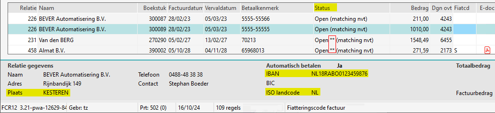

Als in de kolom status ** staat, betekent dat bij betreffende crediteur een van de volgende gegevens ontbreken:
-
IBAN-nummer
-
Automatisch betalen moet op ja staan.
-
Vanaf versie 3.20 ook:
-
Naam1
-
Plaats
-
ISO landcode
-
Pas deze gegevens aan Onderhoud relaties .
De post wordt dan niet mee verzameld, dit is het geval bij de laatste twee posten / regels.
